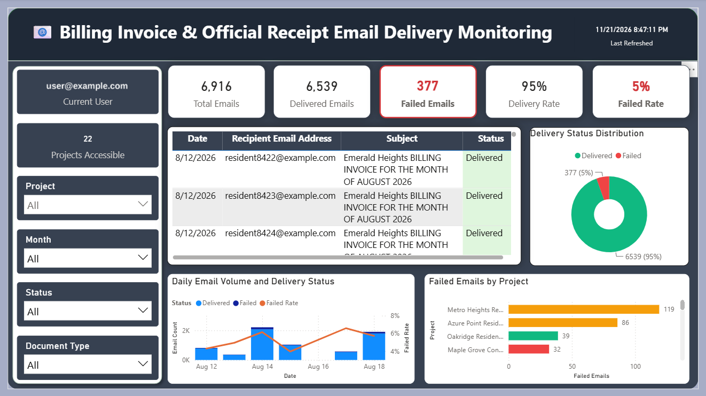
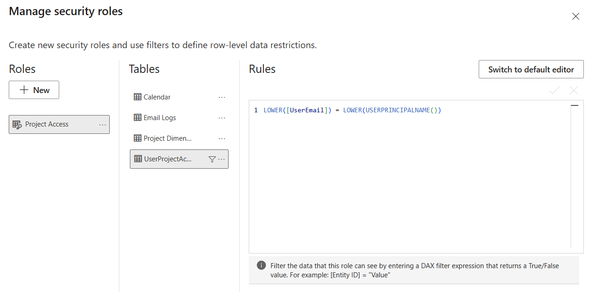
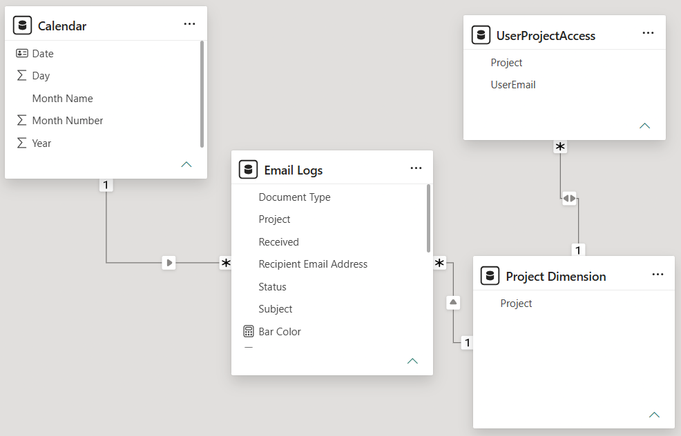
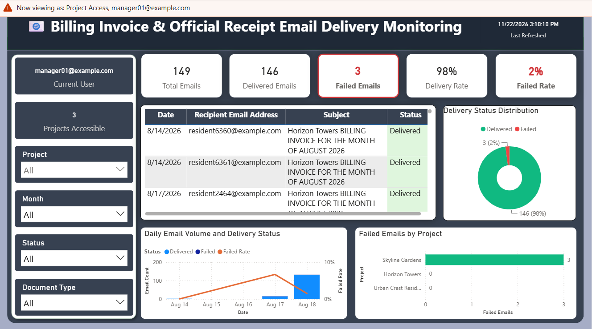
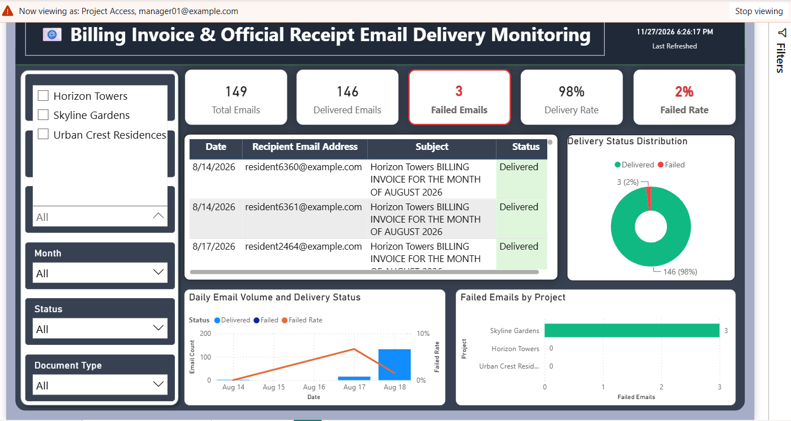
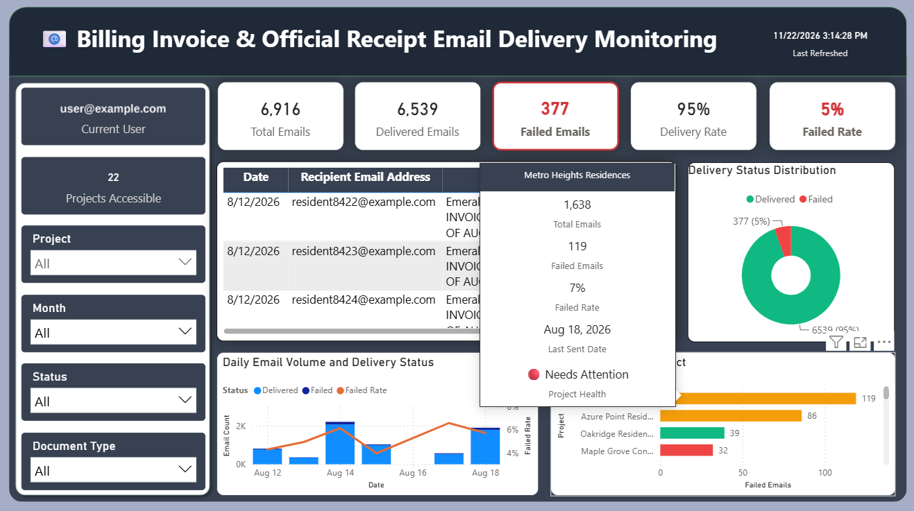

KPI cards
Total, delivered and failed emails, plus the delivery rate and failed rate. The Failed Emails card is outlined in red so problems stand out first.
A Power BI report that tracks billing invoice and official receipt emails, showing which messages were delivered and which failed. A masked-email version is used at work, and this page also shows a variant with dynamic row-level security, so each manager sees only their own projects.
Billing invoices and official receipts are emailed to residents every month, and some of those emails fail to deliver. The team needs to spot failures quickly and see which projects are affected. Resident email addresses are personal data, so not everyone who looks at the report should see them, and each manager should see only their own projects, not the whole email log.

Portfolio version, full access view of the anonymized sample: 22 projects, 6,916 emails and a 5% failed rate.
This page covers two versions of the same report. Both use anonymized data with fake names and emails, and the sample has 22 projects.
The version used at work. Billers, accounting supervisors and accounting managers use it. Recipient email addresses are masked in the report, and a View Full Email Details button links to SharePoint, where each project has its own Excel file with the exact addresses.

The version used at work, rebuilt with anonymized data. Recipient addresses are masked, and the button links to the full details.
The result at work: billers no longer have to request the Excel file every month. The dashboard and the Excel file for their own projects are already available to view.
The masking is a DAX calculated column on the Email Logs table. It keeps the first character, replaces the rest of the name with three asterisks, and keeps everything from the @ onward, so the domain stays readable:
Masked Email =
VAR EmailAddress = [Recipient Email Address]
VAR AtPos = SEARCH ( "@", EmailAddress, 1 )
RETURN
LEFT ( EmailAddress, 1 ) & "***"
& MID ( EmailAddress, AtPos, LEN ( EmailAddress ) )The email log table in the report shows this column instead of the original address. It hides the address in the report only. The original column is still in the model, so the report is meant for people who are already allowed to work with this data.
This portfolio version. Without Premium capacity, viewing a report with row-level security in the Power BI Service needs a license for each viewer, so the work version doesn't use it. I built this version to show how that security would work: dynamic row-level security, tested in Power BI Desktop with View as.
Total, delivered and failed emails, plus the delivery rate and failed rate. The Failed Emails card is outlined in red so problems stand out first.
A searchable table of each email with its date, recipient, subject and delivery status.
A delivery status donut, a daily chart of email volume with the failed rate as a line, and failed emails by project.
The email log comes from the parent company's IT shared service as a monthly Excel export, requested after the billing run. The report reads from that file. The data on this page is anonymized.
Filter by project, month, status and document type to narrow down to a specific batch of emails.
The report uses a row-level security role named Project Access. It filters the data based on who is signed in, so each person sees only the projects assigned to them. The filtering happens in the data model, before anything reaches the visuals, so a user can't remove it by changing a slicer.
A small UserProjectAccess table maps each manager's sign-in email to the projects they manage. The Project Access role applies one filter to that table, and the relationship carries it through to the email log:
-- Role: Project Access
-- Table filter on 'UserProjectAccess'
LOWER ( [UserEmail] ) = LOWER ( USERPRINCIPALNAME () )Both sides are lowercased, so a difference in capitalization between the stored email and the sign-in account can't lock a manager out.

The Project Access role in Manage roles. Click the image to see it full size.
The UserProjectAccess table filters the Project Dimension table through the Project column, and the dimension filters the Email Logs table.
The relationship between UserProjectAccess and Project Dimension is set to filter in both directions, with the security filter applied both ways. That is what lets a filter on the access table reach the dimension, and from there the Email Logs table.

Model view: the security table filters Project Dimension, which filters Email Logs. Click the image to see it full size.
The Current User and Projects Accessible cards use two simple measures:
Current User = USERPRINCIPALNAME ()
Projects Accessible =
DISTINCTCOUNT ( 'Project Dimension'[Project] )Adding or removing a manager means editing one row in the UserProjectAccess table, with no change to the report or the role. Because the role filters on the signed-in account, one report can serve any number of managers.
I tested it with View as in Power BI Desktop, using a manager account from the access table. I don't have a Power BI Pro license, so this project has not been published to the Power BI Service. There, managers would be added to the Project Access role in the dataset's security settings. The same report shows very different numbers:
| Full access | Manager view | |
|---|---|---|
| Projects accessible | 22 | 3 |
| Total emails | 6,916 | 149 |
| Failed emails | 377 | 3 |
| Failed rate | 5% | 2% |

Viewing as a manager account: only 3 projects and 149 emails are visible.
The slicers follow the same rule. The Project dropdown lists only the manager's own projects, so there is nothing else to pick.

Project slicer in View as mode: only the manager's 3 projects are listed.
Hovering over a project opens a tooltip page with its total emails, failed emails, failed rate, last sent date and a project health status, such as Needs Attention.

Tooltip page: a quick health check for one project.
Each decision below answers a real question about who should see what.
Slicers only change what a user looks at. Row-level security changes what they are allowed to see, so restricted users can't reach other projects' emails.
In the work version, the report shows only the first letter of each recipient address (r***@example.com), so the overview can be shared widely. A View Full Email Details button links to SharePoint, where each project has its own Excel file with the exact addresses. The version on this page solves the same “who sees what” problem in a different way, with row-level security, which without Premium capacity needs a license for every viewer.
The header shows the data coverage dates, the number of projects covered and when the report was last refreshed, so readers know how current the numbers are.
The Current User and Projects Accessible cards tell each person which account they are viewing as and how many projects that covers, which makes the restriction easy to understand and to check.
The daily chart plots the failed rate as a line over the email volume, so a spike in failures is visible even on days with fewer emails.
A tooltip page keeps the main report uncluttered while still giving a one-glance health check for any project.
I'm happy to walk through how the security role and measures work.